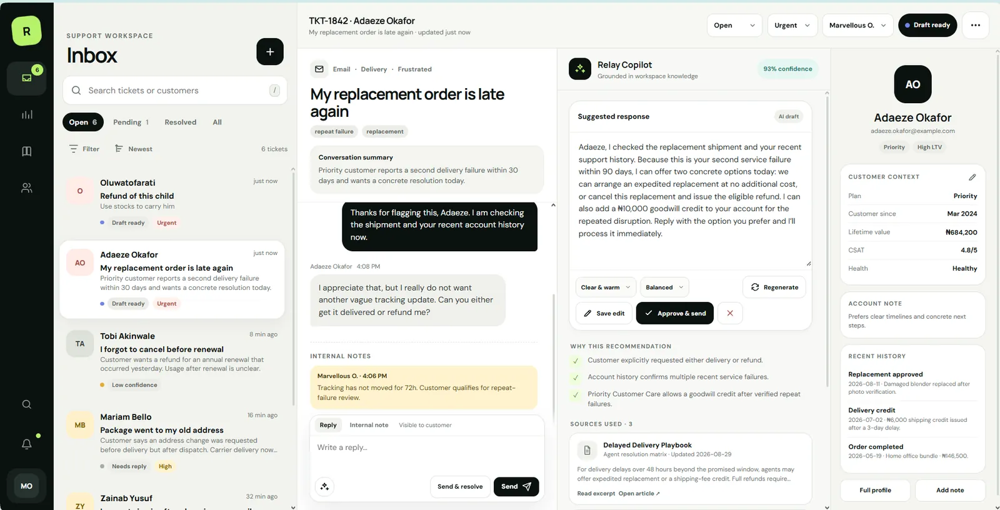
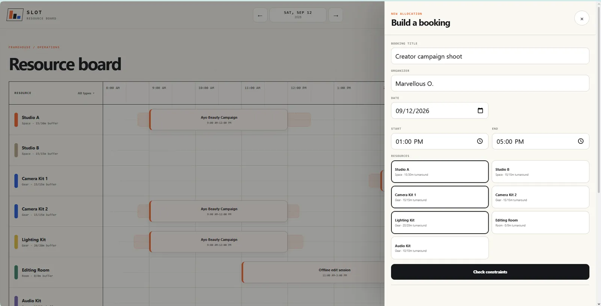
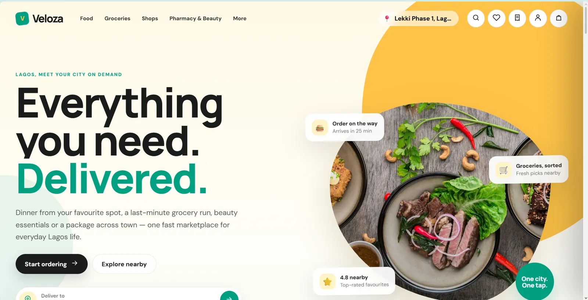
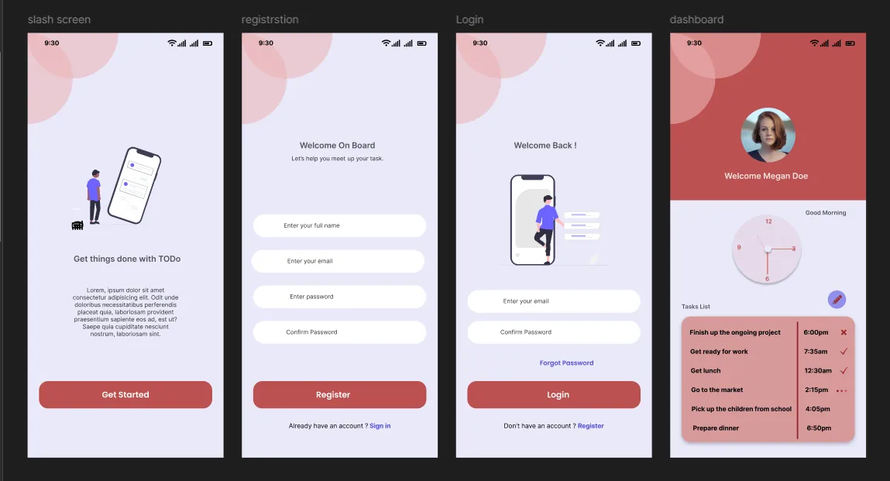
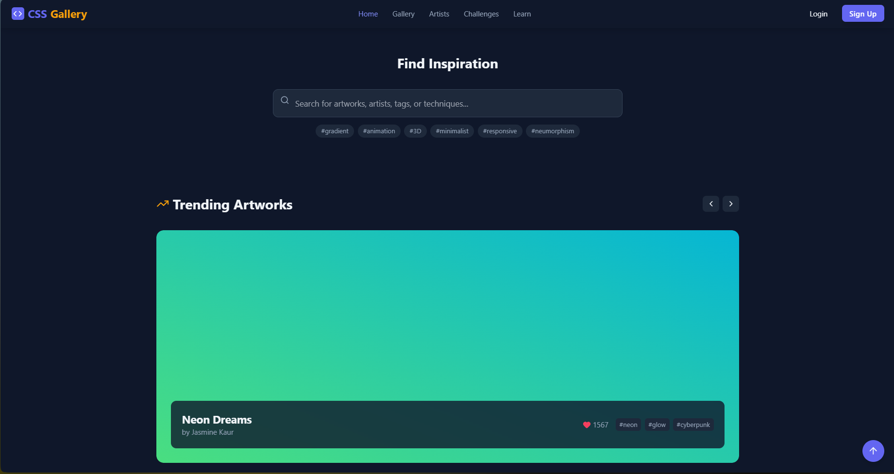
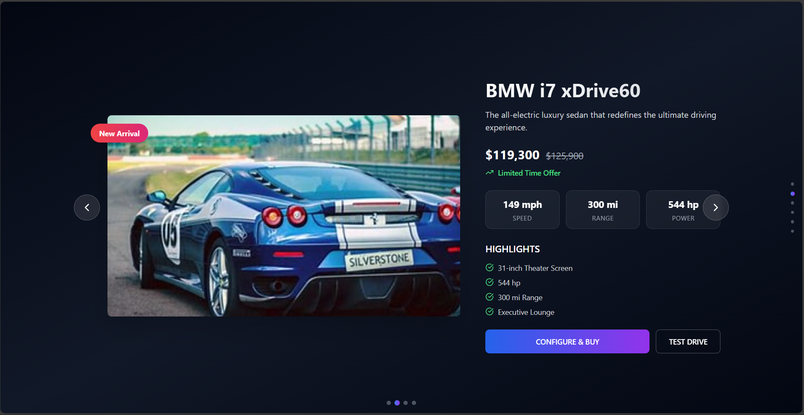

KoraGo

The archive now leads with personal builds that can be inspected through real screenshots and source repositories, followed by clearly separated Neegles team contributions. Hover or focus a row on desktop; use VIEW on touch devices.
Ownership first. Then responsibility. Then evidence. The archive changes what it shows depending on the question being asked.
Personal builds lead the cabinet; team contributions remain visibly separated below.















Every record declares what kind of evidence exists instead of pretending every project has the same depth, ownership or source material.
A repository is available and linked from the dossier.
Real supplied interface screens can be inspected at full resolution.
Interface thinking is documented as a design concept rather than disguised as shipped code.
Work completed at Neegles is clearly separated from independently owned personal builds.
These are company and team projects I contributed to while working at Neegles. They remain deliberately separate from personal builds: no standalone case study, no implied sole ownership.
Product-development contribution across repair operations, job states, invoices and supporting application workflows.
PRODUCT CONTRIBUTIONWordPress contribution on an e-commerce-oriented website while working with Neegles.
WORDPRESSWordPress website contribution completed as part of the Neegles delivery team.
WORDPRESSWordPress contribution completed while working with Neegles.
WORDPRESSWordPress website contribution completed as part of the Neegles team.
WORDPRESSWordPress website contribution completed while working with Neegles.
WORDPRESSThis interface record has supplied screenshots, so it remains inspectable as an artifact. The original product name was not supplied, so the archive keeps a descriptive label instead of inventing one.